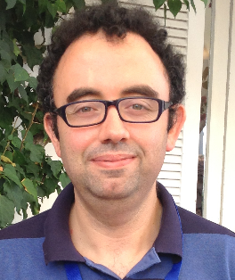

A short Biography
 I was born in a small town on the italian coast of Adriatic Sea. My interest for astronomy started in 1986 when Halley comet decided to hide behind the clouds in its last passage. In parallel, I developed an interest on nuclear physics also thank to a movie about Enrico Fermi and his group, I ragazzi di via Panisperna (1988). Easy how to understand how I ended to work in this field.
I carried out my studies at the University of Perugia where I obtained both my master and my PhD degree in Physics in 2009 under the supervision of Prof. XXXXXXX. During my academic training I had the opportunity of interfacing with a broad and international scientific community. I have spent three months at the Stanford Linear Accelerator Center (SLAC) as an exchange student in the summer student program DOE/INFN working under the supervision of E. do Couto e Silva. Here I have started to get familiar with space science and satellites. Within the Integration and Test group of GLAST (Gamma Large Area Space Telescope), I have tested personally most of the sensitive components of tracker of the satellite now known as Fermi Gamma-ray Space Telescope. In the subsequents years, I have started to work at Italian Space Agency Science Data Center under the supervision of Dr. P. Giommi. becoming affiliated with Italian Institute of Astrophysics (INAF). I have continued my research in the field of Active Galactic Nuclei and learned to manage and validate astronomical data of high energy space missions. In 2015, I got a Fixed term position at Italian institute for Nuclear Physics (INFN) within an agreement between italian space agency and INFN to manage space mission of strategic interest of the two institutions.
Actual Status
Since 2018, I am a staff researcher at INFN, Roma Tor Vergata unit, and I am still working Cep risus aliquam gravida cep ut lacus amet. Adipiscing faucibus nunc placerat. Tempus adipiscing turpis non blandit accumsan eget lacinia nunc integer interdum amet aliquam ut orci non col ut ut praesent. Semper amet interdum mi. Phasellus enim laoreet ac ac commodo faucibus faucibus. Curae ante vestibulum ante. Blandit. Ante accumsan nisi eu placerat gravida placerat adipiscing in risus fusce vitae ac mi accumsan nunc in accumsan tempor blandit aliquet aliquet lobortis. Ultricies blandit lobortis praesent turpis. Adipiscing accumsan adipiscing adipiscing ac lacinia cep. Orci blandit a iaculis adipiscing ac. Vivamus ornare laoreet odio vis praesent nunc lorem mi. Erat. Tempus sem faucibus ac id. Vis in blandit. Nascetur ultricies blandit ac. Arcu aliquam. Accumsan mi eget adipiscing nulla. Non vestibulum ac interdum condimentum semper commodo massa arcu.